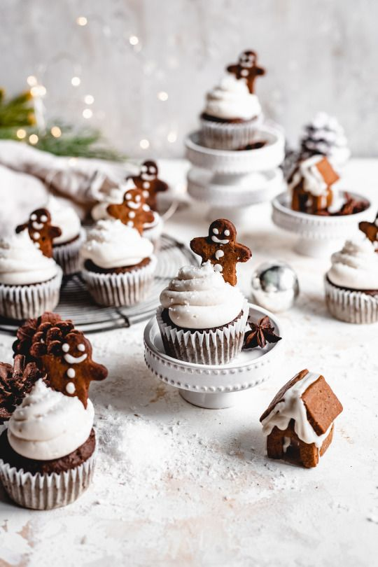
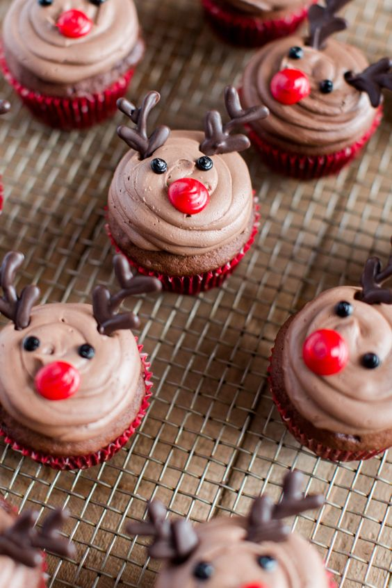
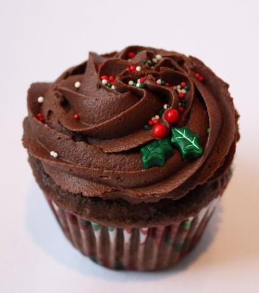
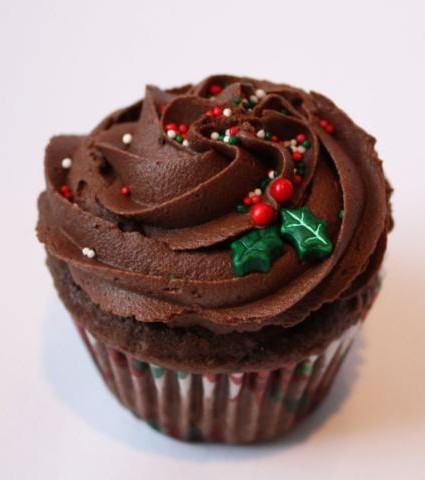
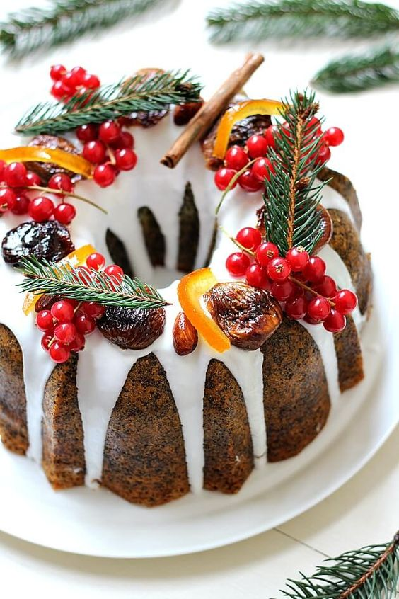
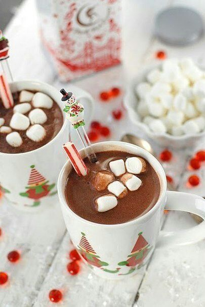
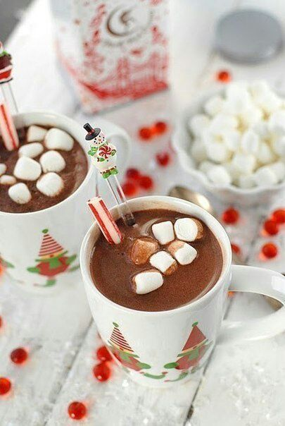

Cupcake Natalino


Os cupcakes são uma opção válida para agradar a todos na hora da sobremesa de Natal e, pensando nisso, inspirámo-nos para criar estes cupcakes de Natal de chocolate.
 prepraro
1h
dificuldade
fácil
rendimento
6 unidades
prepraro
1h
dificuldade
fácil
rendimento
6 unidades
Ingredientes
- 1 xícara de açúcar refinado
- ¾ xícara de farinha de trigo (105 gramas)
- ¾ xícara de cacau em pó
- ½ xícara de manteiga amolecida
- ½ xícara de creme azedo (sour cream) - receita abaixo
- 3 unidades de ovo
- 1½ colheres de chá de fermento em pó
- 1 colher de chá de extrato de baunilha
- 1 pitada de sal
- 2½ xícaras de açúcar de confeiteiro
- 6 colheres de sopa de cacau em pó
- 6 colheres de sopa de manteiga fria
- 5 colheres de sopa de leite evaporado
- 1 colher de chá de extrato de baunilha
- confeitos de Natal
Modo de preparo
Para preparar estes deliciosos cupcakes comece por fazer a massa: misture todos os ingredientes secos em uma tigela e reserve.
Em outra tigela bata a manteiga com o açúcar até obter um creme esbranquiçado e leve. Acrescente os ovos e o extrato de baunilha e volte a bater muito bem.
Pouco a pouco, e enquanto bate, acrescente o ingredientes secos à mistura anterior, alternando com o creme azedo. O resultado final deverá ser uma massa meio pesada e homogênea.
Divida a massa dos cupcakes por forminhas de cupcake encaixadas em um tabuleiro de cupcakes, porém sem encher até ao topo. Leve a assar no forno preaquecido a 180ºC por 20-25 minutos.
Enquanto isso prepare a cobertura dos cupcakes de chocolate: misture em uma tigela o cauca em pó e o açucar de confeiteiro.
Numa tigela grande bata a manteiga com a batedeira até que vire uma pasta. Gradualmente acrescente os ingredientes anteriores alternando com o leite evaporado, e sem deixar de mexer. Acrescente o extrato e bata até obter um creme leve e suave. Reserve por uns 10-15 minutos na geladeira.
Quando os cupcakes estiverem assados e frios, decore-os com a cobertura de chocolate usando um saco de confeiteiro, e acrescente os confeitos. Delicie todo o mundo com este cupcake de Natal, e diga-nos qual sua opinião. Bom apetite!
Possíveis decorações




 

Bolo de Natal

Este bolo é realmente incrível. Tem um sabor refinado das especiarias e do toque de conhaque. Faz o maior sucesso nas festas de fim de ano.
prepraro
1h e 30min
 dificuldade
médio
rendimento
700g aprox.
dificuldade
médio
rendimento
700g aprox.
Ingredientes
- 1 ⅔ xícara (chá) de farinha de trigo
- 200 g de manteiga em temperatura ambiente
- 1 ½ xícara (chá) de açúcar mascavo
- 4 ovos
- 1 xícara (chá) de nozes (cerca de 120 g)
- ½ xícara (chá) de frutas cristalizadas (cerca de 80 g)
- ½ xícara (chá) de uvas-passas brancas (cerca de 70 g)
- 1 xícara (chá) de ameixa seca sem caroço (cerca de 150 g)
- ¼ de xícara (chá) de conhaque (ou rum)
- ½ colher (sopa) de fermento em pó
- ½ colher (sopa) de canela em pó
- 1 pitada de cravo-da-índia em pó
- noz-moscada ralada na hora a gosto
- 1 lata de figo em calda para servir
- açúcar de confeiteiro a gosto para decorar
- manteiga e farinha de trigo para untar e polvilhar
Modo de preparo
Pré-aqueça o forno a 180 ºC (temperatura média). Unte com manteiga uma fôrma com furo no meio de 22 cm de diâmetro. Polvilhe com farinha e chacoalhe bem para espalhar. Bata sobre a pia para retirar o excesso de farinha e reserve.
Numa tábua, pique fino as nozes. Pique a ameixa seca em cubinhos e transfira para uma tigela. Junte as uvas-passas e regue com o conhaque. Deixe de molho enquanto prepara os outros ingredientes.
Sobre uma tigela, passe a farinha de trigo por uma peneira. Junte o fermento, a canela, a noz-moscada, o cravo e as nozes picadas. Misture bem.
Na tigela da batedeira, coloque a manteiga e bata com a pá por cerca de 2 minutos, até ficar cremosa. Acrescente o açúcar e bata em velocidade média por cerca de 10 minutos, até formar um creme fofo. Numa tigela, quebre um ovo de cada vez e junte ao creme, batendo bem entre cada adição para incorporar.
Acrescente a mistura de secos em etapas e bata a cada adição apenas para misturar. Desligue e desencaixe a tigela da batedeira.
Sobre uma tigela, passe as ameixas e uvas-passas por uma peneira e reserve o conhaque. Junte as frutas secas à massa do bolo, adicione as frutas cristalizadas e misture delicadamente com uma espátula.
Transfira a massa para a fôrma untada e bata delicadamente sobre a bancada para nivelar. Leve ao forno e deixe assar por cerca de 35 minutos. Para saber se o bolo está assado, espete um palito na massa: se sair limpo é sinal que o bolo está pronto; caso contrário deixe assar por mais alguns minutos.
Assim que estiver assado, retire o bolo do forno e deixe esfriar por pelo menos 15 minutos antes de desenformar. Enquanto isso, passe os figos por uma peneira e deixe escorrer bem a calda. Corte cada um ao meio, no sentido do comprimento.
Desenforme e pincele toda a superfície do bolo com o conhaque reservado - o bolo morno absorve o conhaque e fica úmido e perfumado. Assim que estiver frio, preencha a cavidade central do bolo com as metades de figo, polvilhe com açúcar de confeiteiro e sirva a seguir.
Possíveis decorações



Chocolate Quente

Essa bebida é mundialmente conhecida por ser excelente para dias frios... Faça e se aqueça com essa delícia!!!
prepraro
10min
dificuldade
fácil
rendimento
4 porções
Ingredientes
- 2 xícaras (chá) de leite
- 1 colher (sopa) de amido de milho
- 3 colheres (sopa) de chocolate em pó
- 4 colheres (sopa) de açúcar
- 1 canela em pau
- 1 caixinha de creme de leite
Modo de preparo
Em um liquidificador, bata o leite, o amido de milho, o chocolate em pó e o açúcar.
Despeje a mistura em uma panela com a canela e leve ao fogo baixo, mexendo sempre até ferver.
Desligue, adicione o creme de leite e mexa bem até obter uma mistura homogênea.
Retire a canela e sirva quente.
Possíveis decorações


 
